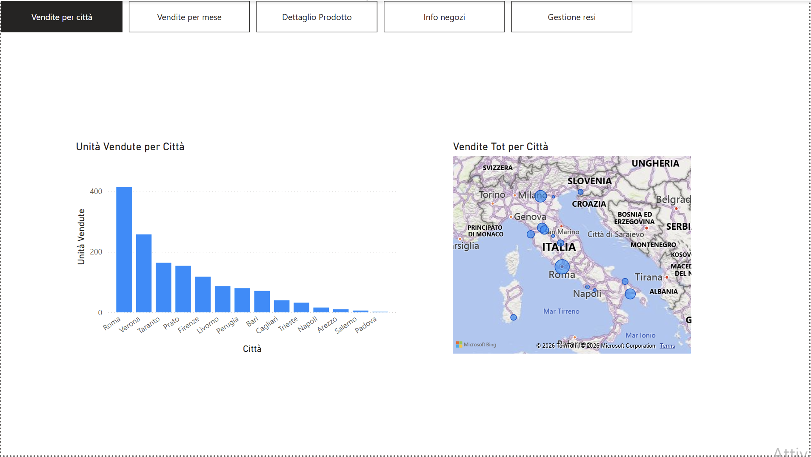

📌 Panoramica del Progetto
Progetto realizzato durante il Master in Data Analytics di ProfessionAI, come capstone del modulo su Power BI. Lo scenario di business — una catena di distribuzione al dettaglio di elettronica di consumo in Italia — è uno scenario simulato ideato per applicare le tecniche in un contesto realistico.
Il report integra le transazioni di vendita del 2014, i dati anagrafici dei punti vendita e la gestione dei resi, per fornire un quadro preciso e navigabile delle vendite nette effettive e della redditività territoriale.
Dataset: Fornito dal materiale didattico del Master in Data Analytics di ProfessionAI.
📊 Interactive Dashboard Preview
 (Figura 1: Analisi di dettaglio dei prodotti, quote di mercato su totale fatturato e filtri dinamici per città)
(Figura 1: Analisi di dettaglio dei prodotti, quote di mercato su totale fatturato e filtri dinamici per città)

(Figura 2: Analisi geografica delle performance di vendita con distribuzione per città, mappa territoriale interattiva e menu di navigazione)💡 Cosa dimostra questo progetto
- Analisi resi e vendite nette: calcolo dinamico del fatturato netto effettivo per punto vendita, tramite l'integrazione contabile del modulo resi (gennaio/febbraio).
- Geolocalizzazione delle performance: mappatura geografica per identificare rapidamente i cluster regionali e le città top performer (es. Roma e Verona).
- UX/UI navigabile con bookmark: menu di navigazione integrato con pulsanti d'azione e segnalibri (bookmark) per esplorare 5 aree di analisi senza affollare la visualizzazione.
📐 Modello Dati & Pipeline ETL (Power Query)
- Data ingestion & merge: importazione ed elaborazione di file mensili e anagrafiche (negozi, prodotti, province). Operazioni di
Mergein Power Query per associare prezzo unitario, descrizione prodotto e responsabile tramite chiavi relazionali (Prodotto_ID,Store_ID). - Star schema: modello relazionale a stella tra le tabelle di dimensione (
Dim_Prodotti,Dim_Negozi) e le tabelle dei fatti (Fact_Vendite,Fact_Resi). - Misure DAX implementate:
Vendite Totali = SUMX(Vendite, Unità Vendute * Prezzo Unitario * (1 - Sconto))Vendite Nette = Vendite Totali - Valore Resi
🖥️ Struttura delle 5 Aree di Report
- 📍 Vendite per Città: istogrammi delle unità vendute e mappatura geografica territoriale.
- 📅 Vendite per Mese: trend temporale di andamento vendite, prezzi medi e sconti applicati.
- 📦 Dettaglio Prodotto: donut chart sulle quote di mercato e slicer condizionali.
- 🏪 Info Negozi: ranking responsabili store, fatturato totale e volumi per indirizzo.
- 🔄 Gestione Resi: focus contabile sulle vendite nette al netto delle merci rese.